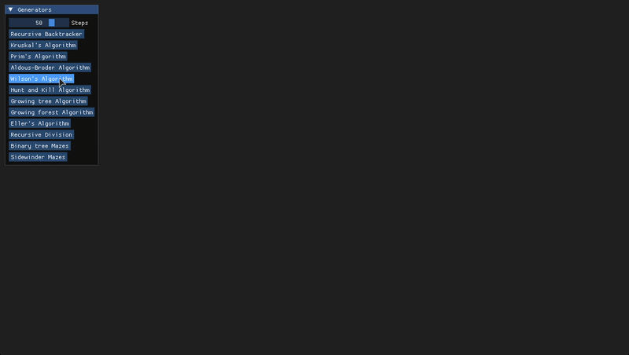

Wilson’s Algorithm
Carving a perfect maze with loop-erased random walks
Wilson’s Algorithm #
Wilson’s Algorithm makes the same unbiased mazes which means it generates all possible Mazes of a given size with equal probability as Aldous-Broder, but it wastes far less time wandering. It starts with a single room in the maze. Then it picks a random room that isn’t in the maze yet and sends a walker out from it on a random walk. The walk ends the moment it touches the maze, and the path it took is carved in. If the walker ever crosses its own path, the loop it just made is erased. Repeat until every room is in the maze.
The loop erasing needs no extra work. Each room remembers only the last direction the walker left it by. When the walker revisits a room, it overwrites that direction, so following the directions from the start skips the loop entirely.

Pseudocode #
carve a random room; remaining = total rooms - 1
while remaining > 0:
start = a random room not in the maze
room = start
while room is not in the maze:
dir = a random direction
next = room + 2 * dir
if next is out of bounds: try again
remember: walk[room] = dir
room = next
room = start
while room is not in the maze:
carve room and the wall in direction walk[room]
room = room + 2 * walk[room]
remaining -= 1Solution #
wilsons :: proc(maze: ^[COLS][ROWS]Cell, first: [2]i32) {
walk: [COLS][ROWS][2]i32 // the direction the walker last left each room by
maze[first.x][first.y] = .PATH
remaining := ((COLS - 1) / 2) * ((ROWS - 1) / 2) - 1
dirs := [4][2]i32{{-1, 0}, {1, 0}, {0, -1}, {0, 1}}
for remaining > 0 {
// pick a random room that isn't in the maze yet
start := random_room()
for maze[start.x][start.y] != .WALL do start = random_room()
// walk until we touch the maze
room := start
for maze[room.x][room.y] == .WALL {
dir := rand.choice(dirs[:])
next := room + 2 * dir
if !is_cell_in_bounds(next) do continue
walk[room.x][room.y] = dir
room = next
}
// carve the path by following the directions from the start
room = start
for maze[room.x][room.y] == .WALL {
dir := walk[room.x][room.y]
wall := room + dir
maze[room.x][room.y] = .PATH
maze[wall.x][wall.y] = .PATH
room += 2 * dir
remaining -= 1
}
}
}
generate :: proc(maze: ^[COLS][ROWS]Cell) {
wilsons(maze, random_room())
}Run it, press space a few times, and you’ll get a new maze each time.
odin run .